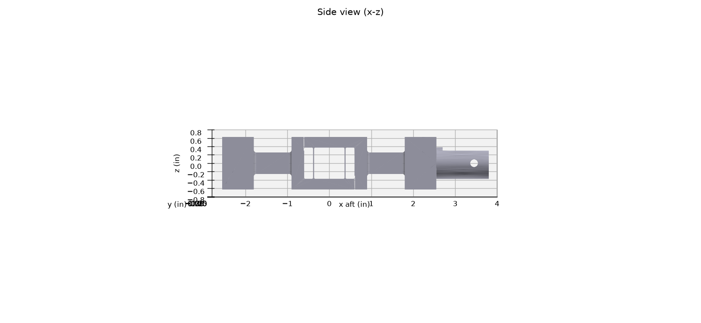
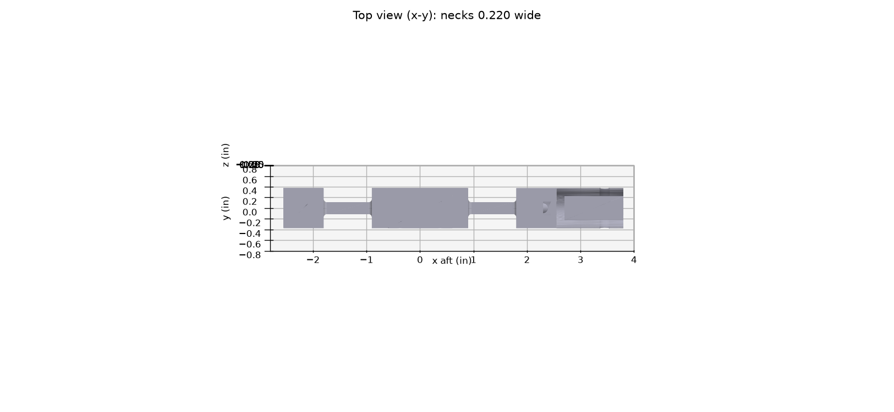
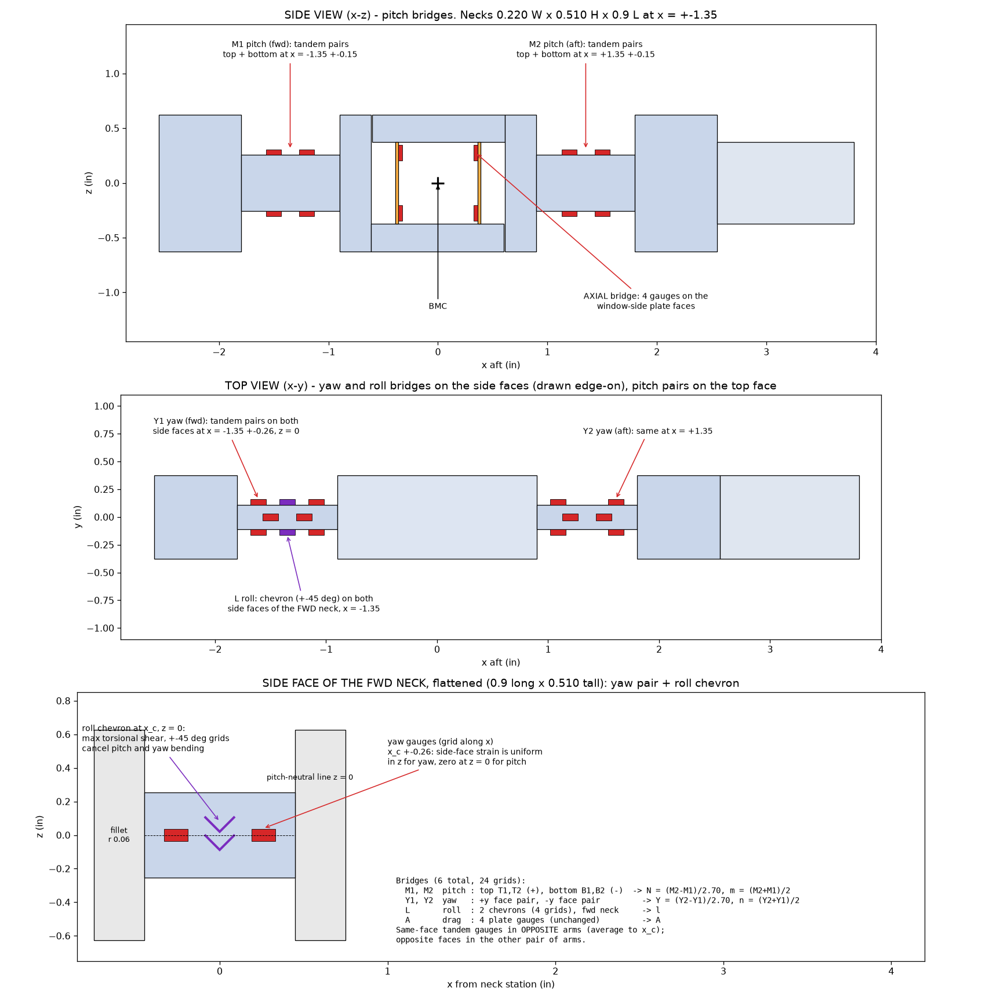
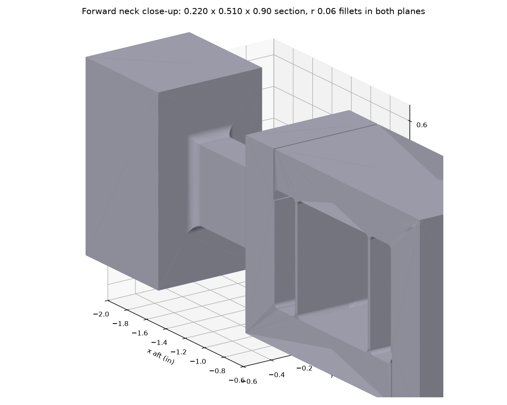
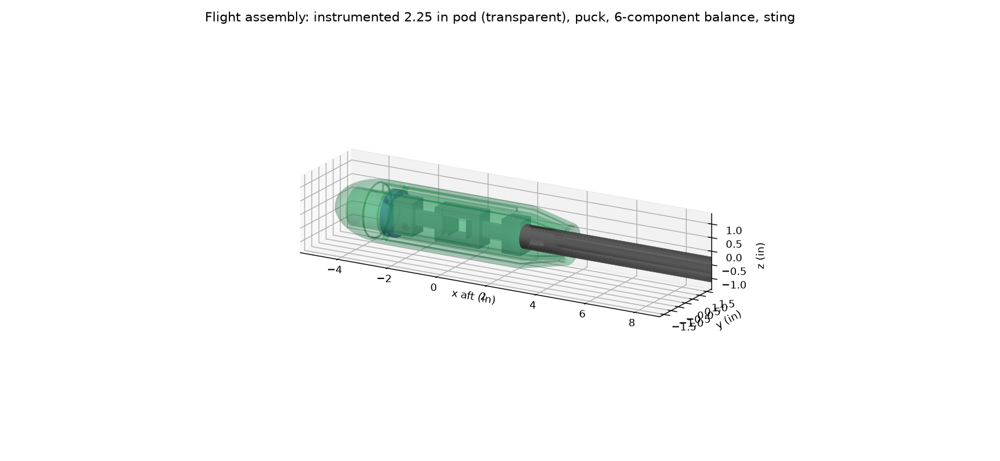

The 6-component balance
One piece of 7075-T651 aluminum, 5.10 in long plus a 1.25 in long, 0.750 in diameter spigot, 0.31 lb. Two tall-narrow necks measure pitch, yaw and roll; a two-plate flexure in the middle measures drag.




Layout
| Section | Size (in) | Job |
|---|---|---|
| Front block + face | 0.75 x 1.25 bar; 2x #10-32 + 2x 1/8 dowels | Model puck bolts here (model side) |
| Front neck (x = -1.35) | 0.220 W x 0.510 H x 0.90 L, r 0.06 fillets | Pitch + yaw bending, roll torsion |
| Drag flexure (x = 0) | 2 plates 0.025 x 0.75 x 0.75, 0.75 apart; 0.012 slots | Drag (axial force) |
| Aft neck (x = +1.35) | same as front neck | Pitch + yaw bending |
| Aft block + spigot | spigot Ø0.7490-0.7495 x 1.25, cross pin, wire bore | Into the sting socket (sting side) |
How it measures
Lift and pitching moment - two-moment method
Lift acts at the BMC between the two necks, so the necks bend in opposite directions; a pure pitching moment bends them the same way. Each neck's top/bottom gauge bridge measures its bending moment:
M_fwd = m - 1.35 N M_aft = m + 1.35 N N = (M_aft - M_fwd) / 2.70 m = (M_aft + M_fwd) / 2
The lift reading does not depend on where the centre of pressure is.
Side force and yawing moment
The same idea in the yaw plane, with gauges on the necks' side faces on the pitch-neutral line (z = 0): Y = (Y2 - Y1)/2.70, n = (Y2 + Y1)/2.
Rolling moment
A ±45° shear ("chevron") bridge on the front neck's side faces, where torsional shear peaks; it ignores pitch and yaw bending.
Drag - the two-plate flexure
Drag is 50-100x smaller than lift, so it gets its own soft element. The bottom rail belongs to the model side, the top rail to the sting side, and two thin plates are the only link. Drag shifts one rail past the other and bends both plates into an S; lift and pitching moment only push or pull the plates along their length. Gauges near the plate roots, wired so the S-bending adds and the push-pull cancels, read drag. The slots double as overload stops.
From balance axes to wind axes
The balance rolls and pitches with the model, so it measures body-axis loads. Lift and drag follow from the measured attitude, e.g. D = A cosα + N sinα and L = N cosα - A sinα (full 3-axis transform in the data reduction). A 0.1° attitude error moves drag by about ΔCD 0.0016 (16 counts) at 100 mph - hence the inclinometer, encoders and the IMU in the pod.
Strain gauges - 24 grids, 6 bridges

| Bridge | Gauges | Output at full scale |
|---|---|---|
| M1, M2 (pitch) | top + bottom faces, tandem pairs at ±0.15 in about each neck centre | 0.98 mV/V |
| Y1, Y2 (yaw) | both side faces at z = 0, tandem pairs at ±0.26 in | 0.97 mV/V |
| L (roll) | 2 chevron gauges, front-neck side faces | 1.23 mV/V |
| A (drag) | 4 gauges on the window-side plate faces, 0.10 in from the roots | 1.35 mV/V |
Micro-Measurements CEA-13 series (self-temperature-compensated for aluminum), 350 Ω, 3.3 V excitation (shared low-noise LT3042 bus, see Electronics), narrow grids (0.031-0.062 in) on the 0.220 in faces; room-temperature-cure AE-10 adhesive so the 7075-T651 is not over-aged by a hot cure; 10 kΩ NTC thermistor on the aft block.
Key numbers




Why it is shaped like this
- One piece (NASA Langley's first rule): bolted joints in the load path cause hysteresis and zero shift.
- Two-moment necks are the simplest measuring elements; the BMC midway between them decouples lift from moment.
- Tall-narrow neck section (h/b = 2.3) equalises pitch and yaw strain, because the pitch-plane moment is 2.3x the yaw-plane moment.
- Drag flexure at the BMC, where the bending moment is only m (not m + N·x), so the plates see the least lift interaction.
- Aluminum, not steel or plastic: lower modulus gives a stiffer balance for the same signal; printed polymers were rejected for creep (see history).
- ~1 mV/V at full scale - the NASA design target, with stress at 7 % of yield.
Fabrication notes
- Wire EDM for the necks, plates, window and slots (rough + 2 skim passes); both necks and both plates from one setup.
- Gauge faces Ra 16 µin, flat 0.0005 in; CMM inspection of neck and plate sections; record actuals for calibration.
Parts, drawings and CAD files
| Drawing (PDF) | Part | STEP |
|---|---|---|
| WT-6C-100 | Assembly, flight (parts list) | assembly_6c_flight.step |
| WT-6C-001 | Balance, 6-component | balance_6c_7075.step |
| WT-6C-002 | Puck, model interface | model_puck_6061.step |
| WT-6C-003 | Sting | sting_4140.step |
The model pod is 3D printed from its STEP file (no drawing): see Models & pod.